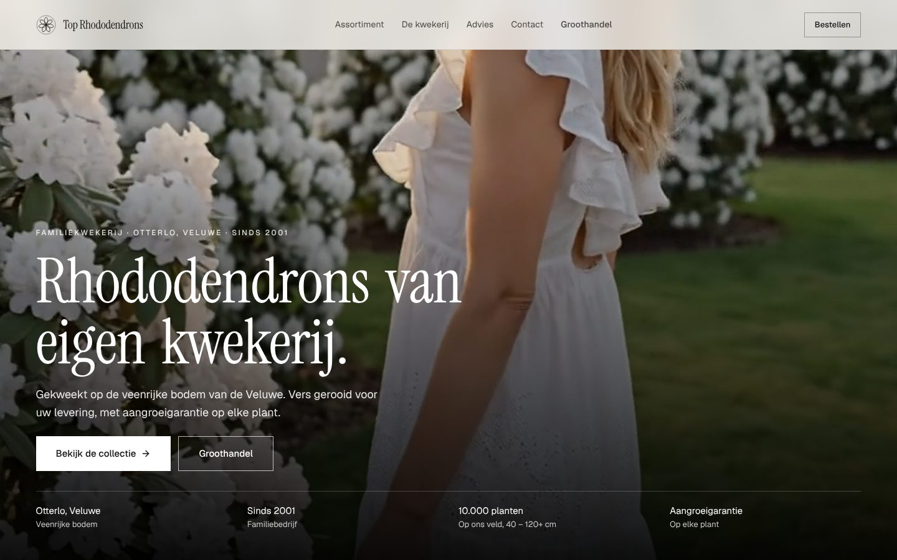
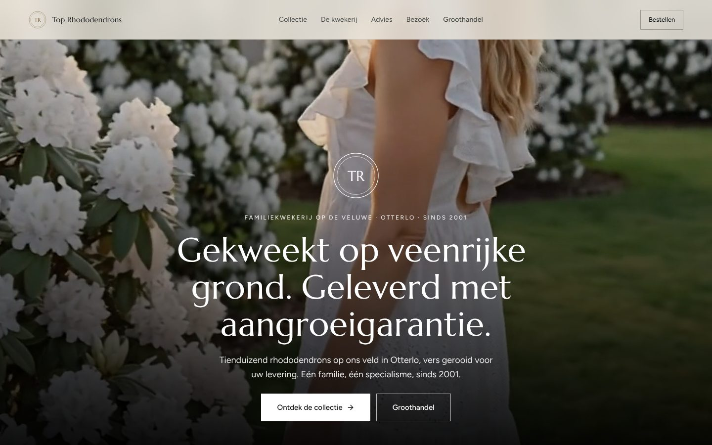
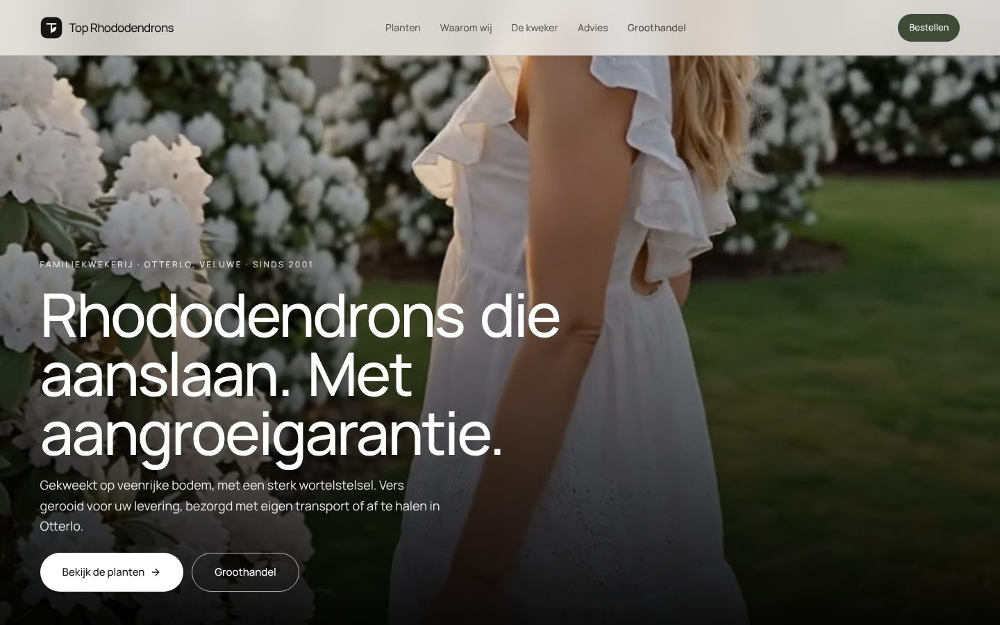

Каждая концепция = главная страница для частных покупателей (видео на весь первый экран) + отдельная страница Groothandel для B2B со своим сценарием (offerte-форма, WhatsApp, телефон). Логотипы нарисованы заново (SVG), использованы только реальные фото, видео, тексты и факты. Собрано на React + Vite + Tailwind из компонентов 21st.dev, адаптированных под бренд.

Регистр дорогого «дома» (как у парфюмерного или винного бренда): много воздуха, тонкие линии, Instrument Serif + Geist, прямые углы. Логотип — «Truss»: семь лепестков в кольце. Ассортимент — «липкое» фото, которое меняется при прокрутке списка сортов. Доверие через портрет Гертa Топа, четыре нумерованных обещания и фото поля.
21st.dev: PrismaHero (видео-хиро), Header 1 (efferd), Scroll 01 (sticky media), Shop by Category Grid, Reveal, How-It-Works Timeline, Contact Form, Footer with Suite, Accordion plus/minus.

Наследие и статус без «костюма»: симметричная центрированная композиция, Marcellus + Figtree обычным регистром, печать-эмблема «TR». Тёмными остались только hero, полоса фактов, фото поля, блок offerte и футер; контент — светлая шампань, чтобы фото цветов не гасли. Горизонтальная галерея сортов едет при прокрутке, портрет садовода в рамке, две сплит-панели «для сада / для профессионалов».
21st.dev: PrismaHero, Header 1, Scroll Horizontal Gallery (motion.dev), Split Feature Section, Reveal, Process Timeline, Contact Form, Footer with Suite, Accordion.

Самый современный вариант: один гротеск Manrope, крупные скруглённые фотоблоки, спокойная секция «четыре причины» (фото поля + обещания списком), карточки сортов с ценой и цветом, сплит-CTA «для сада / для профессионалов». Логотип — геометрический лист-монограмма «Top Rhododendrons». Видео-хиро с крупным заголовком и двумя кнопками-пилюлями.
21st.dev: PrismaHero, Header 1 (капсульный режим), Shop by Category Grid, Split Feature Section, Reveal, Process Timeline, Contact Form, Footer with Suite, Accordion.
prefers-reduced-motion (видео заменяется кадром, анимации отключаются). Отчёт независимого аудита и список исправлений — AUDIT.md.Каждая страница — самодостаточный HTML-файл. Можно открыть двойным кликом прямо с диска: этот файл (mockup-v2/dist/index.html) и ссылки на концепции работают без сервера.